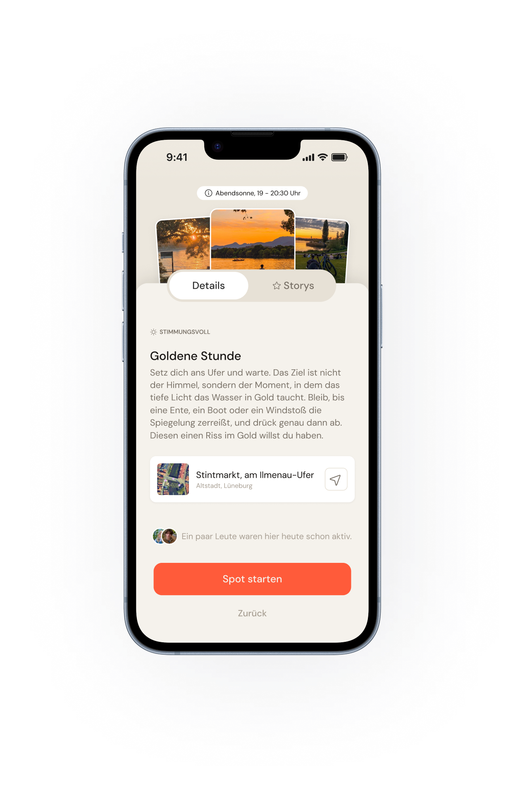
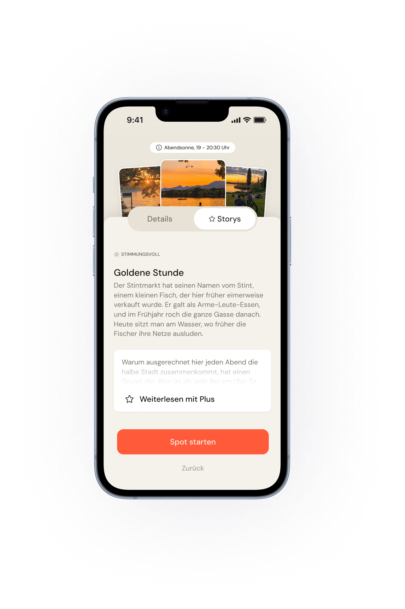
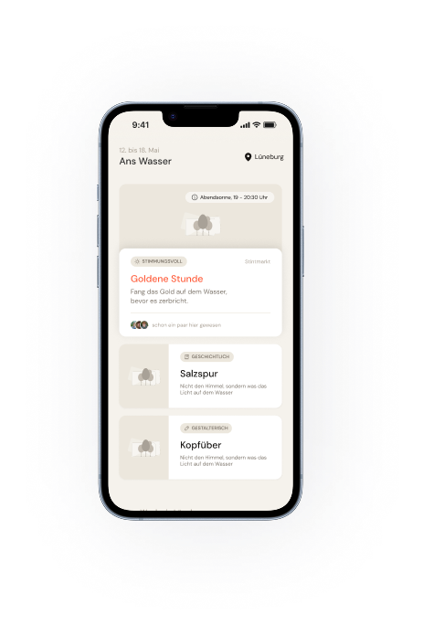
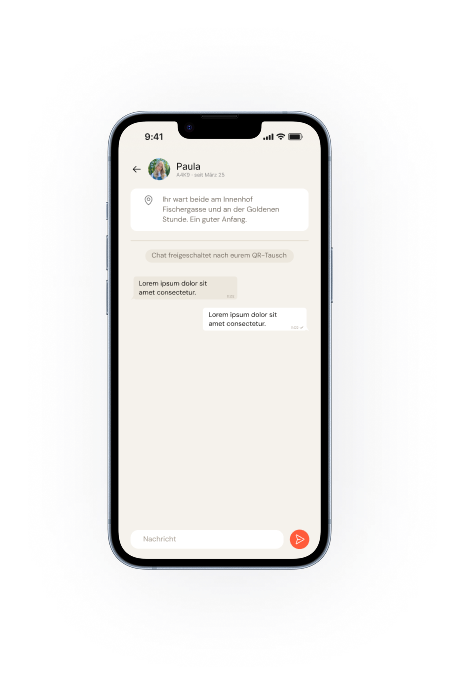
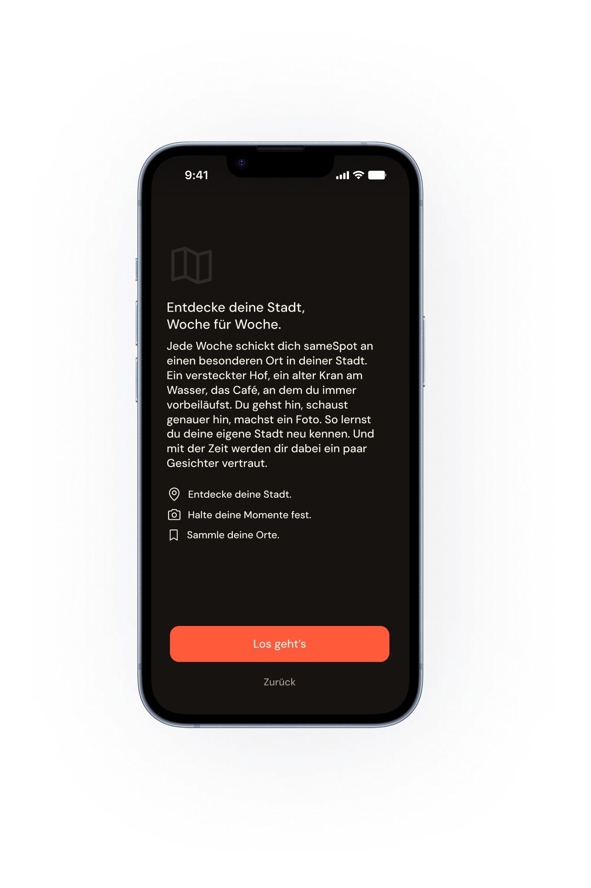
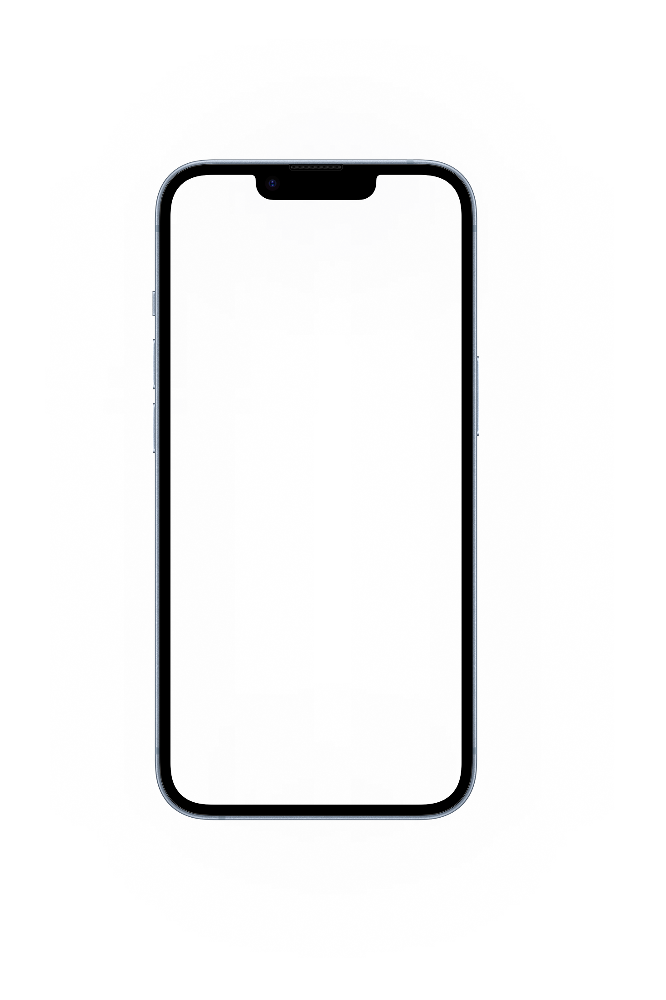
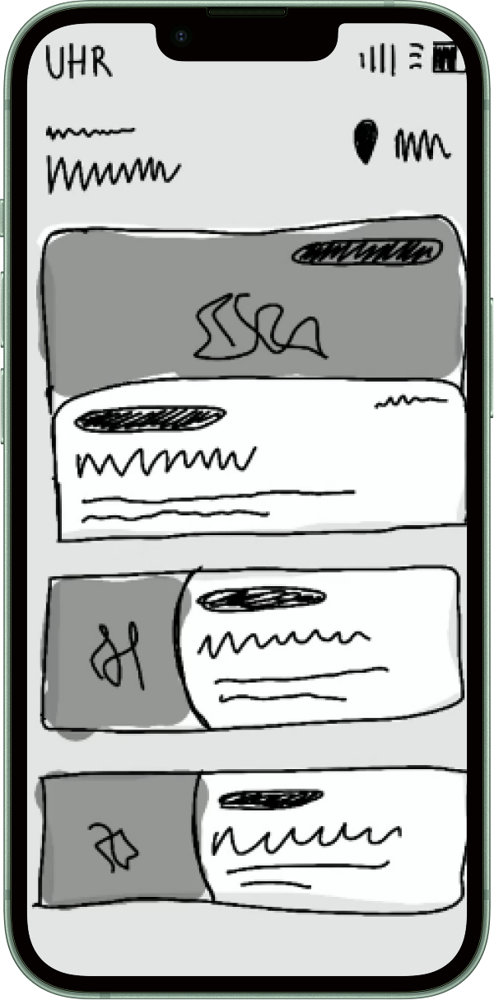
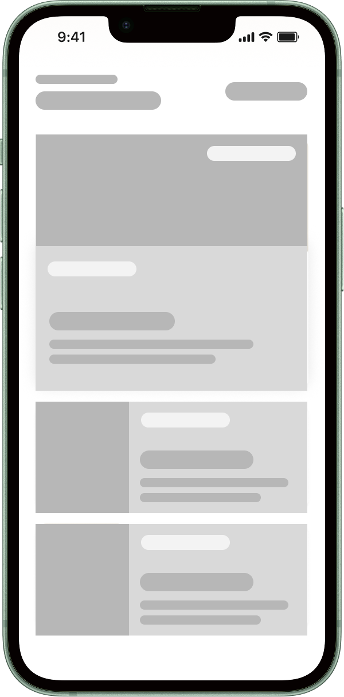
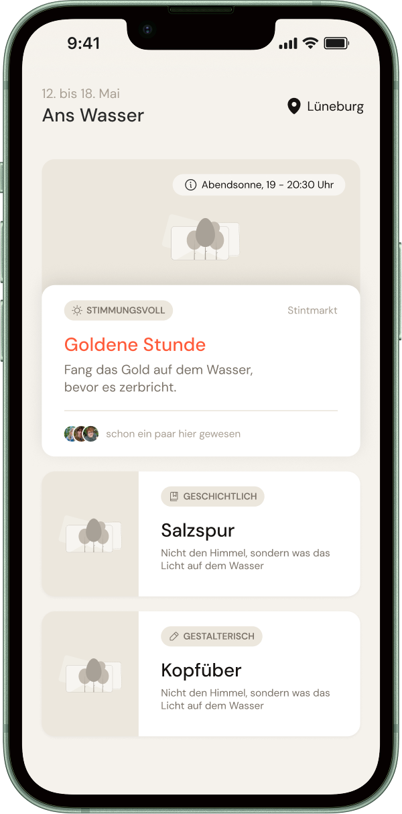
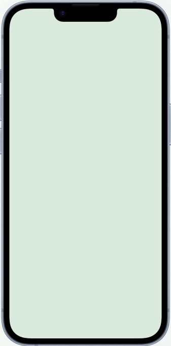

sameSpot
Eine App, bei der lokale Verbindung als Nebenprodukt entsteht, nicht als Ziel. Für Menschen, die sich Nähe wünschen, aber von klassischen Sozial-Apps eher abgeschreckt werden. Der Leitgedanke: Würde meine Persona sie nutzen, selbst wenn sie wüsste, dass sie nie jemanden trifft?
52 Antworten aus meiner Umfrage. Der Grund, warum die App auf passives Wiedersehen setzt statt auf aktives Anschreiben.
Eine Person. Das Problem war nie das Wollen.
Darunter das größte Risiko: meine Kernmechanik ließ Testpersonen sich unwohl fühlen.
Der Prüfstein, den ich für den Kernmechanismus definiert habe: die Bedingung, unter der das Konzept scheitern darf.










Erst das Ergebnis, dann der Weg dahin.
Der Loop in drei Screens: eine kleine Aufgabe an einem Ort, ein passives Wiedersehen im Feed, ein Code-Austausch, wenn beide wollen.

„Ich würde ja gerne, aber nicht so.“
Ich bin mit einer harmlosen Frage gestartet: warum lernen sich Menschen, die sich täglich sehen, nie kennen? Die Antworten haben die Frage gedreht. Es fehlt nicht an Gelegenheiten und nicht an Interesse. Es fehlt an einer Situation, in der niemand den ersten Schritt machen muss.
Umfrage: 52 Antworten · 4 Tage
„Ich bin wohl einfach zu schüchtern dafür und kann nicht über meinen Schatten springen.“
Interviewperson 2, Kernzielgruppe
Stille Resignation
Kein Widerspruch, sondern das Zeichen, dass Menschen aufgehört haben zu hoffen, ohne es bewusst zu entscheiden. Rückzug ist nicht aufgeben, es ist die sicherste Option.
Ort ≠ Verbundenheit
63%
wünschen sich trotzdem neue Kontakte
Verbundenheit mit dem Ort und Verbundenheit mit Menschen sind zwei verschiedene Dinge. Das war eine echte Überraschung.
Niemand spricht Neue an
Nur 1 von 52 spricht jemanden Neues an. Die Hemmschwelle ist nicht hoch, sie existiert für die meisten schlicht nicht als Option.
Hanna ist keine Annahme, sondern eine Verdichtung.
Vier Interviews und 52 Umfrage-Antworten in einer Person: sie lebt allein, wünscht sich Verbindung und ist von alltäglicher Ansprache überfordert. Sie merkt das Problem in den kleinen, unverabredeten Momenten, nicht abends in einer App.
Verhalten
wartet auf Ansprache, zerdenkt soziale Momente, bevor sie passieren
Needs
Verbindung ohne Druck, den ersten Schritt nicht selbst machen müssen
Motivation
will, dass sich ihr Leben wieder echter anfühlt, nicht taub durch den Alltag
Pain Points
Angst vor Ablehnung, sucht den Fehler bei sich selbst
Vier Apps im Detail. Und eine leere Ecke gefunden.
Vier Apps, die Teile meiner Idee schon können: Bumble BFF (Kontakt ohne Dating-Druck), Meetup (gemeinsamer Anlass), nebenan.de (Nachbarschaft) und Pokémon GO (Orte als Spielfeld). Sortiert nach Ortsbindung und danach, wie viel Eigeninitiative der erste Kontakt kostet.
Drei Wege waren möglich, zwei habe ich verworfen.
Jede Variante wurde nach Importance, Effort und Impact bewertet (jeweils von 4 möglichen Punkten). Alle drei erreichten die volle Relevanz für die Zielgruppe. Entschieden hat am Ende die Wirkung im Verhältnis zum Aufwand.
Wöchentliches Stadtspiel
Ortsgebundene Rätsel und Challenges, die Hanna wöchentlich an reale Orte in der Stadt schicken. Verbindung zu anderen entsteht nur, wenn beide es aktiv wollen.
Stille Stadtkarte
Eine Karte, die sich durch Hannas eigene Alltagsorte füllt und still zeigt, wo andere regelmäßig sind, ganz ohne Profile, Namen oder Feed.
Alltagsaufgaben mit passivem Feed
Wöchentliche Alltagsaufgaben. Verbindung entsteht als Nebenprodukt durch geteilte Orte und einen passiven Feed, nicht durch aktives Suchen.
Also habe ich das Ansprechen weggenommen.
Statt Profile zu wischen, macht man eine kleine Aufgabe an einem Ort. Wer öfter am selben Spot war, taucht im Feed wieder auf: passiv, ohne Nachricht. Erst wenn beide wollen, wird ein Code getauscht. Der erste Schritt ist damit keine Entscheidung mehr, sondern eine Wiederholung.
- Spot-Detail
- Aufgabe starten
- Code-Exchange
- Feed
- Beitrag
- Wiedersehen
- Begegnungen
- Chat
- Meine Spots
- Einstellungen
- Sichtbarkeit
Vier Bereiche, eine Ebene darunter. Mehr gibt es nicht. Die Tiefe ist der Beweis: von jedem Startpunkt sind Aufgabe, Feed, Austausch und Einstellungen in zwei Klicks erreichbar.



Was ich bewusst weggelassen habe.
Der Kern-Loop musste ohne Beiwerk funktionieren. Alles, was ihn erklärt oder monetarisiert hätte, ist für diese Version rausgeflogen.
Kein Matching-Algorithmus
Die Wiederholung am Ort ist das Signal. Ein Score hätte genau das ersetzt, was die App besonders macht.
Premium raus aus dem Kernflow
Im Test hat jede Bezahl-Schwelle den Loop unterbrochen, bevor er verstanden wurde.
Kein Chat-Ausbau
Der Code-Austausch ist eine „Sidequest“ innerhalb der Aufgabe, kein Abschluss. Die Aufgabe selbst beendet man weiterhin manuell. Was danach im Chat passiert, war nicht mehr Teil des Scopes.
Womit ich arbeiten musste, und was mich das gekostet hat.
Warum sehe ich ständig die gleiche Person? Würde die blockieren wollen.
Tester #2 · Think-Aloud · zur Wiederbegegnungs-Mechanik im Feed
Zwei Testpersonen, klickbarer Mid-Fi-Prototyp. Beide haben das Konzept im Gespräch verstanden, im Interface aber nicht wiedererkannt. Die Mechanik hat sich also anders angefühlt als gedacht.
Wiedersehen wirkt „creepy“
als Verfolgung gedeutet, nicht als Absicht
Orientierungslos nach dem Onboarding
kein klarer erster Schritt, kein sichtbarer CTA
Chat und Begegnungen nicht auffindbar
im Profil versteckt statt in der Hauptnavigation

Ich war überzeugt, das Wiedersehen sei der Wow-Moment. Es war das größte Risiko.
Der Screen, an dem beide Testpersonen hängengeblieben sind: die Wiederbegegnung stand im Feed wie eine Beobachtung, mit Zähler, ohne Kontext, ohne Gegenüber.
Grenze dieser Erkenntnis: zwei Testpersonen zeigen Verständnisprobleme, keine Verhaltensmuster.
Nicht alles Gefundene war gleich wichtig.
Aus dem Test kamen mehr Findings als Zeit. Ich habe sie danach sortiert, ob sie den Kern-Loop blockieren oder ihn nur bequemer machen. Nur die erste Gruppe habe ich umgesetzt.
- Wiedersehen positiv framen
- Shared Spots als gemeinsamer Bezugspunkt eingeführt
- Austausch in die Hauptnavigation
- Ortsbezug der Aufgabe klarer machen
- Begegnungs-Kennzahl schärfen
- Streak-Bedeutung erklären
- Code-Austausch angenehmer gestalten
- Entdecken-Bereich weiter vereinfachen
Ich habe nicht die Mechanik geändert, sondern ihre Erzählung.
„Du warst schon 3x am selben Ort wie Mara.“
Onboarding endet im leeren Feed.
Nachrichten liegen im Profil.
„Ihr wart beide schon hier, dann hättet ihr ja schon ein Thema.“
Shared Spots statt Beobachtung: ein gemeinsamer Ort als Gesprächseinstieg.
Austausch als eigener Bereich unten.
der Nutzer:innen, die eine Wiederbegegnung sehen, starten einen Code-Austausch. Daran würde ich messen, ob der Kernmechanismus trägt, wöchentlich, verantwortet von UX, UI und Dev.
Eine App, die Orte kennt, muss sich das verdienen.
Das „creepy" aus dem Test war kein Copy-Problem, sondern eine berechtigte Frage nach Kontrolle. Drei Regeln stehen deshalb über der Mechanik.
Der Code ist die Grenze
Ohne Austausch kein Kontakt. Es gibt keinen Weg, jemanden ungefragt anzuschreiben.
Blockieren und Ausblenden
Wer eine Person nicht mehr sehen möchte, blendet sie einfach aus. Still, ohne Erklärung, ohne dass die andere Person etwas davon merkt.
Geschlechtsfilter, opt-in
Vorab einschaltbar, damit zum Beispiel Frauen aus Sicherheitsgründen gar nicht erst Männer in ihren Begegnungen sehen, wenn sie das nicht wollen.
Ein kleines System, damit 16 Screens zusammengehören.
FarbeWie ich mit KI gearbeitet habe, und wo nicht.
- Umfrage- und Interview-Antworten nach Themen sortiert und geclustert, das hat mir einen Großteil der Vorarbeit abgenommen.
- Zitate nach Motiven sortiert: Hemmschwelle, Angst vor Ablehnung, Selbstzuschreibung („ich bin zu schüchtern“).
- Für die Microcopy bei der Wiederbegegnung mehrere Tonalitäten durchgetestet, bevor ich mich für die Formulierung entschieden habe, die im Test funktioniert hat.
- Aus den Gesprächen kam die entscheidende Erkenntnis: das Problem ist der erste Schritt, nicht die Gelegenheit.
Der komplette Prozess, Schritt für Schritt.
Jede Methode, jedes Artefakt, in der Reihenfolge, in der es entstanden ist. Zum Aufklappen, wenn du es genau wissen willst.
Was ich beim nächsten Mal anders mache.
- Ich würde schon mit dem Low-Fi-Prototyp testen, nicht erst ab Mid-Fi.
- Sicherheit war für mich anfangs kein eigenständiges Thema, sondern in der Mechanik mitgedacht. Erst die Feedback-Schleifen haben gezeigt, dass es eigene Antworten braucht: was, wenn jemand eine Person nicht mehr sehen möchte, oder ein Geschlecht komplett ausschließen will? Daraus sind die Sicherheitsregeln entstanden, das Blockieren/Ausblenden und der Geschlechtsfilter.